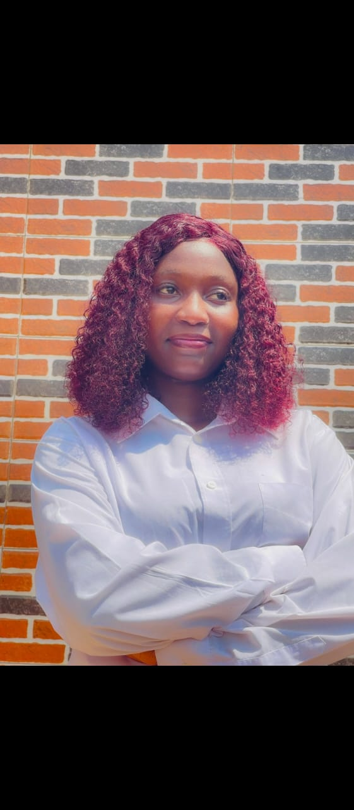
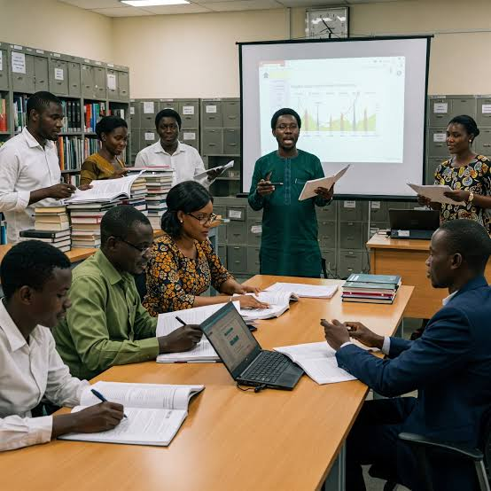
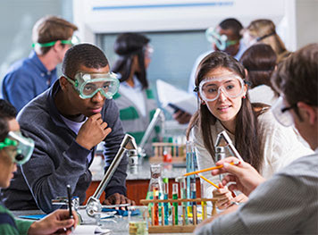

Research seminar on applied modelling
Join our seminar series where staff present recent applied work.
"The Faculty of Physical Sciences stands at the intersection of discovery and impact. We train scientists, statisticians, geologists, mathematicians, chemists, physicists, and optometrists who go on to shape policy, industry, and knowledge across Nigeria and beyond."
Each Department offers courses leading to B.Sc.Honours Degree in at least one discipline. In this prospectus, students will find the combination of courses they are required to take and pass in order to qualify for the award of a chosen degree. Therefore, it is imperative for students to read carefully the prospectus and seek clarification when they are in doubt.
Join our seminar series where staff present recent applied work.

Students present projects demonstrating analytical and computational skills.

Hands-on sessions covering R, Python, and reproducible research.
The Faculty of Physical Sciences is built around strong academic instruction, practical training, and a culture that supports student growth from admission to graduation.
Replace each image with the current office holder and update the short description where needed.

COMR. Onahi Adiya
Orezijesu
COMR. Ogbemudia Itohan
Ruth
Comr. VIVIAN OSARETIN OKUONGHAE
Comr. OSAGIE MIRACLE
Comr. MICHAEL ODIASE
Comr. OHENHEN ISOKEN GLORY
Comr.s.oshiame oluwatimilehin
Comr. AIYEVBEKPEN KELLY
Comr. ONAIWU DESTINY OSAYI
Our faculty combines rigorous academics with practical application to prepare students for industry, research, and postgraduate success.
Comprehensive programs across Statistics, Geology, Mathematics, Chemistry, Physics, designed with input from industry leaders and research pioneers.
Learn from accomplished researchers and practitioners with years of experience and proven track records in their fields.
Graduates join top organizations, pursue advanced degrees, or lead research projects that impact policy and industry.



Quick answers to the most common questions about programmes, admissions, support, and getting in touch with the faculty.
The faculty includes Statistics, Geology, Chemistry, Physics, and Mathematics.
Visit the University of Benin admission portal and follow the current faculty and departmental admission instructions.
Yes. Our programmes include practical sessions, laboratory work, projects, and supervised academic activities.
You can use the Contact Us page or reach the faculty through the email and phone details in the footer.